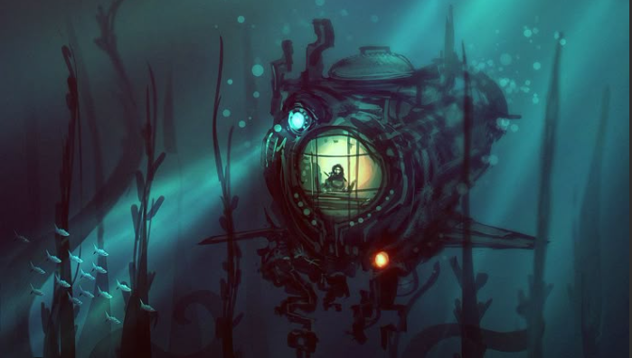

Em um futuro dominado pela tecnologia, o oceano — antes fonte de vida — tornou-se um depósito de resíduos digitais e plásticos inteligentes. Latas descartadas, lixo pra todo lado e máquinas abandonadas se misturam aos corais e à fauna marinha. A linha entre natureza e tecnologia desapareceu. Você joga como Nami, uma bióloga marinha que se une a um drone submarino LUX. Juntos, eles exploram os restos de um mundo que tentou controlar a natureza com algoritmos e acabou sufocando-a com tecnologia.